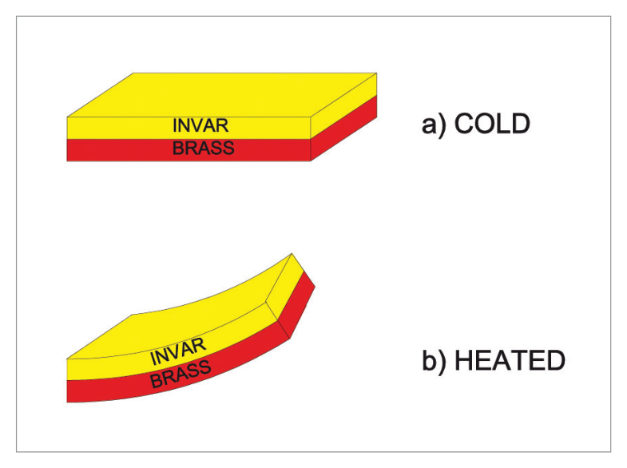
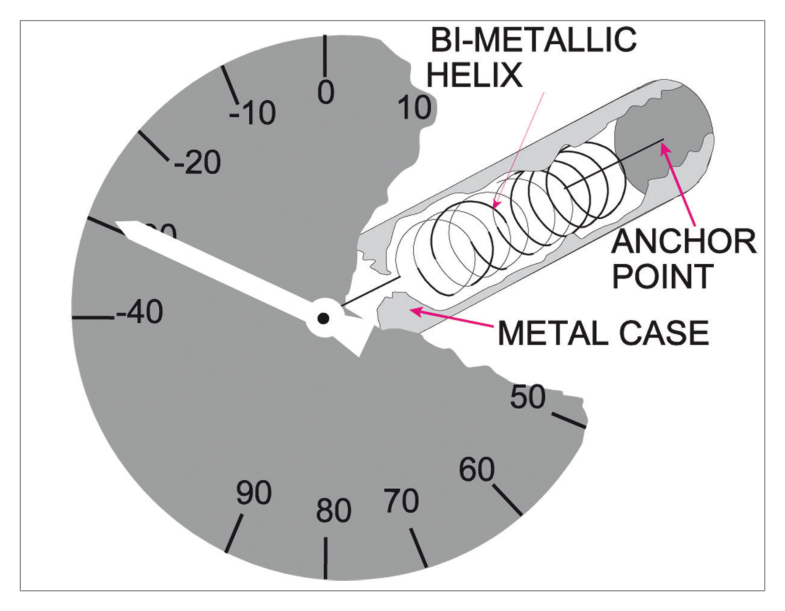
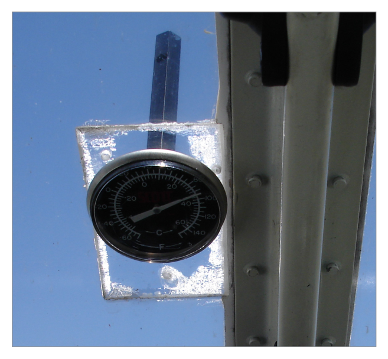
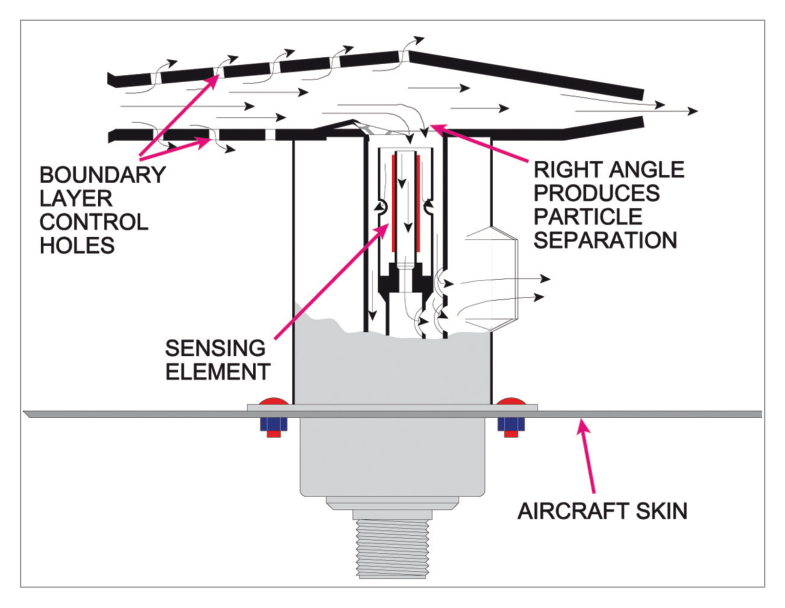
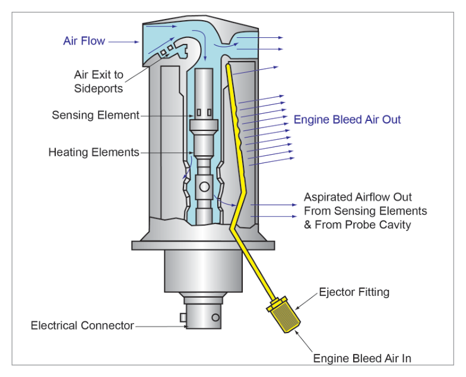
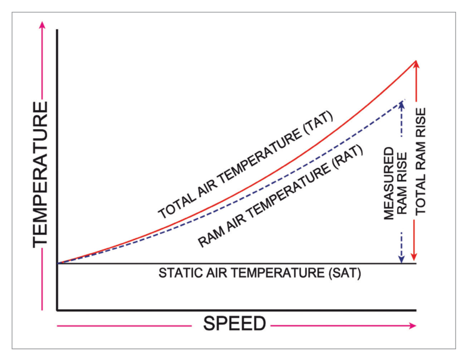
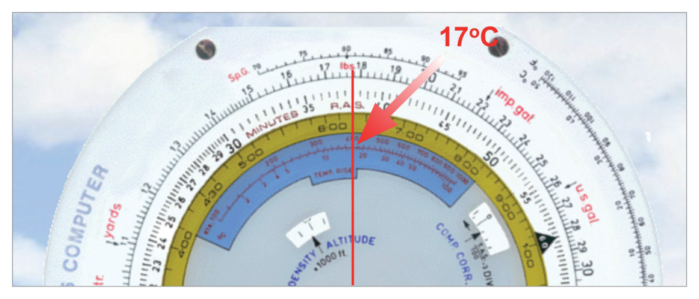
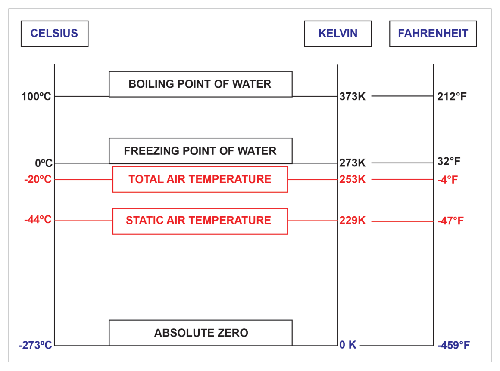
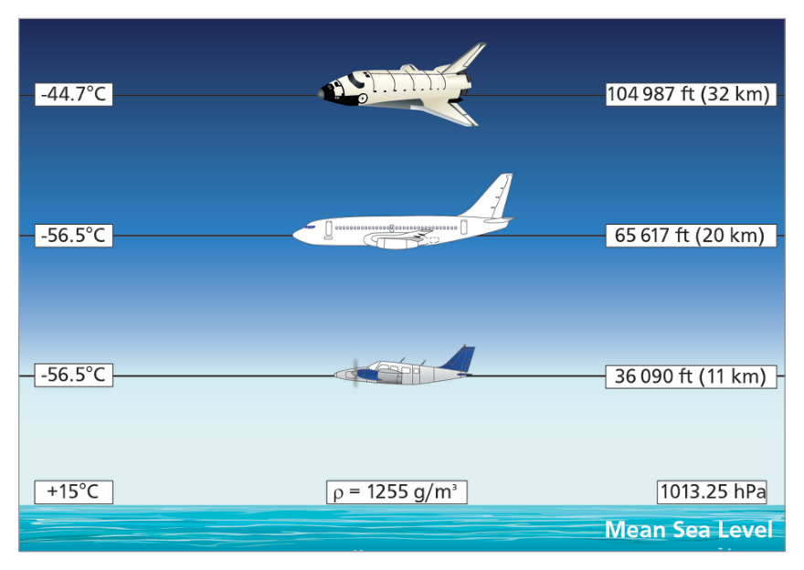

What this section covers: The four operational reasons why accurate outside air temperature is critical for flight safety, engine performance, speed measurement, and altitude measurement.
A pilot must know the temperature of the surrounding air for the following reasons:
1.1 Avoidance of Icing Conditions
Ice formation on aircraft, particularly in cloud, can be very rapid and extremely dangerous. Icing effects include:
Loss of lift and increase in drag — ice distorts the aerofoil shape
Increase in mass — can be as much as ten tonnes on large aircraft with thick icing
Freezing of control surfaces so they cannot be moved
Loss of engine power or total engine failure due to intake or carburettor icing
Ice shed from propellers striking the fuselage
Hazard: Unlike turbulence or lightning (merely unpleasant), icing degrades the aircraft’s fundamental aerodynamic capability. Mitigation: avoid cloud, or climb/descend out of the temperature bands associated with icing — these vary by aircraft type.
1.2 Engine Power and Aircraft Performance
Aviation engines (jet and piston) require a correct fuel/air ratio for combustion. Dense (cold) air allows more fuel to be injected, producing more power. Less dense (warm) air reduces available power — this has significant effects on take-off performance calculations.
1.3 Measurement of Speed
Airspeed cannot be measured directly — dynamic pressure is measured instead. Dynamic pressure depends on both aircraft speed and air density. Since temperature affects density, temperature data is essential to compute True Airspeed (TAS).
1.4 Measurement of Altitude
The rate of pressure change with altitude varies with temperature. Altimeter indications contain a temperature error that can create potentially dangerous under-readings near high ground in cloud.
Exam Tip: If asked “why do pilots measure air temperature?” give all four reasons: icing avoidance, engine performance, speed measurement, altitude accuracy.
2. Air Temperature Thermometers
What this section covers: The two fundamental thermometer types — Direct Reading (bimetallic helix) and Remote Reading (platinum resistance) — their construction, operating principle, and suitability.
2.1 Direct Reading Thermometer
Operates on differential thermal expansion. A bimetallic strip bonds two metals with different coefficients of expansion:
Invar — nickel-steel alloy; uniquely low coefficient of thermal expansion.
Brass — higher coefficient of thermal expansion.
On heating, the brass expands more than the invar, causing the strip to curl. The amount of curl is proportional to temperature rise. The strip is drawn into a helix to amplify pointer movement. The probe protrudes through the windscreen or fuselage into the airstream; the dial is visible to the pilot.

Bimetallic strip — brass expands more than Invar, causing the strip to curl. Source p.27.

Bimetallic helix thermometer. Source p.28.

Direct-reading thermometer placement on a PA28 Warrior. Source p.28.
Limitation: The direct reading type is unsuitable for larger/faster aircraft because: (1) penetrating the windscreen at high speed degrades structural integrity; (2) it produces no electrical output for sharing with other systems (air data computers, engine management, etc.).
2.2 Remote Reading Thermometer
Uses a sensor whose electrical resistance changes with temperature. The sensor is located anywhere suitable on the fuselage (away from boundary layer) and sends an electrical signal to a remote cockpit indicator and to other aircraft systems.
flowchart LR
A["Outside Air\n(TAT Probe)"] --> B["Platinum\nResistance Wire\n(sensor)"]
B --> C["Electrical\nSignal"]
C --> D["Cockpit\nIndicator"]
C --> E["Air Data\nComputer"]
C --> F["Other\nSystems"]
What this section covers: Construction, materials, operating features and special design elements of the TAT probe used on modern transport-category aircraft.
The TAT probe is a small strut and air intake made of nickel-plated beryllium copper — chosen for good thermal conductivity and mechanical strength. It is fixed to the fuselage at a point that keeps it clear of the aircraft’s boundary layer.

Total Air Temperature Probe — showing strut, bleed holes, right-angle airflow path and sensor element. Source p.29.
3.1 Key Design Features
Feature
Purpose
Right-angle airflow turn inside intake
Separates water particles from the airflow before they reach the sensing element (water cannot make the sharp turn)
Bleed holes in intake casing
Higher pressure inside the intake draws off boundary layer air, preventing it from contaminating the measurement
Pure platinum resistance wire sensor
Very high thermal conductivity; rapid response; precise and repeatable resistance-temperature relationship
Inbuilt heating element
Prevents ice formation. Self-compensating — as temperature rises, heater resistance increases, reducing current automatically
Heater error: The inbuilt heater introduces a measurement error of less than 1°C — considered insignificant in practice.
3.2 Ground Temperature Measurement (Aspirated Probe)
Modern aircraft use reduced take-off power to protect engines from thermal stress (e.g. 93% power is a typical example, computed from runway length, weight, altitude and temperature). When stationary on the ground there is no natural airflow through the probe. An aspirator (air-to-air ejector) uses engine bleed air or APU bleed to create suction, drawing fresh outside air through the casing even when the aircraft is stationary — preventing heat-soaked stagnant air from being measured.

Aspirated TAT probe — engine bleed air creates suction past the sensing element. Source p.30.
4. Errors in Air Temperature Measurement
What this section covers: All error sources affecting temperature gauges, with their causes and mitigations.
Error
Cause
Remedy
Instrument error
Manufacturing imperfections
Calibration; correction cards
Solar heating
Direct sunlight on the probe
Shielding within the probe strut
Ice accretion
Ice build-up on probe
Inbuilt electric heater
Heating error
Adiabatic (compression) + kinetic (friction) heating due to speed
Recovery factor & correction formulae
Warning: The dominant error by far is heating error — the combined effects of adiabatic and kinetic heating. All other errors are minor by comparison.
5. Heating Error — Compression and Kinetic Heat
What this section covers: The physics behind heating error, the two components (kinetic and adiabatic), and all the temperature definitions that result.

Effect of speed on measured temperature — measured temperature rises above SAT as TAS increases. Source p.31.
5.1 Kinetic Heating
Primary contributor in direct reading thermometers. As aircraft speed increases, more air molecules per second impact the probe surface, generating frictional heat at the surface.
5.2 Adiabatic (Compression) Heating
Primary contributor in remote reading (total head) thermometers. The high-speed airflow (potentially several hundred knots) is brought virtually to rest inside the platinum sensing chamber very rapidly. The kinetic energy of the moving air converts to temperature rise through adiabatic compression — analogous to pumping a bicycle pump (pressure energy converts to heat with no external flame).
The combined kinetic + adiabatic effect always totals a known quantity called the Total Ram Rise. Because no probe is perfectly efficient, the actually measured quantity is the Measured Ram Rise.
5.3 Temperature Definitions
Term
Symbol
Definition
Static Air Temperature
SAT / Ts / COAT / OAT
Temperature of undisturbed air through which the aircraft is about to fly
Total Air Temperature
TAT / Tt / IOAT
Maximum temperature attainable when air is brought to rest adiabatically (theoretical maximum)
Ram Air Temperature
RAT
Temperature actually measured by the probe (less than TAT due to probe inefficiency)
Total Ram Rise
—
Temperature difference: TAT − SAT (theoretical)
Measured Ram Rise
—
Temperature difference: RAT − SAT (actual measured)
Recovery Factor
Kr
Fraction of Total Ram Rise actually recovered by the probe. Determined by flight test; published in aircraft operating instructions.
Permitted Terminology Equivalences:
SAT = COAT (Corrected Outside Air Temperature) = OAT (when used alone)
TAT = IOAT (Indicated Outside Air Temperature) — note: many gauges are labelled “TAT” but actually display RAT
Summary Relationships: TAT = SAT + Total Ram RiseRAT = SAT + Measured Ram RiseMeasured Ram Rise = Total Ram Rise × Kr
6. Ram Rise and Recovery Factor — Worked Example
What this section covers: Quantitative application of the Recovery Factor, with a full numerical example showing the relationship between SAT, RAT, and TAT.
Worked Example — Recovery Factor Application (Source Example)
Given: SAT = −60°C, Total Ram Rise = 30°C, Kr = 0.9
Step
Parameter
Value
Calculation
1
SAT
−60°C
Given
2
Total Ram Rise
+30°C
Given
3
(Theoretical) TAT
−30°C
SAT + Total Ram Rise = −60 + 30
4
Recovery Factor Kr
0.9
Given
5
Measured Ram Rise
+27°C
30 × 0.9 = 27
6
RAT (gauge reading)
−33°C
SAT + Measured Ram Rise = −60 + 27
7
Correction to get SAT
−27°C
SAT = RAT − Measured Ram Rise = −33 − 27 = −60
Conclusion: The gauge reads −33°C (RAT). A correction of −27°C is applied to obtain the true SAT of −60°C.
7. Correction of TAT/RAT to SAT
What this section covers: The five methods available to convert the indicated RAT to actual SAT, including the quick in-flight formula and the CRP-5 navigation computer.
Methods to convert RAT to SAT (in order of exam relevance):
Rapid formula (in-flight quick approximation — not for JAA/EASA/DGCA exams)
CRP-5 navigation computer (blue scale — use in exams)
Accurate Kelvin formula (most precise)
Data Tables
Air Data Computer (automatic, used in modern aircraft)
7.1 Rapid Formula (In-Flight Only)
Ram Rise ≈ (TAS in knots / 100)²
TAS (knots)
Ram Rise (Rapid Formula)
Ram Rise (CRP-5)
200
4°C
4°C
300
9°C
9°C
400
16°C
17°C
500
25°C
25°C
Exam Warning: Do NOT use the rapid formula in DGCA/EASA exams — use the CRP-5 or Kelvin formula. The CRP-5 gives 17°C for 400 kt (not 16°C from the rapid formula).
7.2 CRP-5 Navigation Computer
On the slide-rule face there is a blue scale: outer ring = TAS in knots; inner ring = Ram Rise in °C. Set TAS on the outer scale, read Ram Rise on the inner scale.

CRP-5 blue scale — use for ram rise in exams. TAS 400 kt gives Ram Rise 17°C. Source p.33.
8. The Absolute (Kelvin) Scale & Accurate Formula
What this section covers: Why absolute temperature is required for the accurate SAT formula, Celsius-to-Kelvin conversion, and a fully worked example of the accurate formula.
The Celsius scale changes sign at 0°C (freezing point of water), creating issues with mathematical ratios. The Kelvin (Absolute) scale starts from absolute zero — the theoretical point of no thermal energy, occurring at −273°C.
Reference Point
Celsius (°C)
Kelvin (K)
Absolute zero
−273
0
Freezing point of water
0
273
Boiling point of water
100
373
Conversion: K = °C + 273 | One kelvin = one degree Celsius (same increment size, different baseline).

Relationship between Celsius and Kelvin scales for TAT/SAT. Source p.35.
8.1 Accurate Formula
SAT (K) = TAT (K) ÷ (1 + 0.2 × Kr × M²)
Variables: TAT = Total Air Temperature in Kelvin; Kr = Recovery Factor (dimensionless, from flight test data); M = Mach Number.
Critical: Temperature MUST be in Kelvin for this formula. Using °C will give a completely wrong answer. Always convert: K = °C + 273.
Worked Example — Accurate SAT Formula (Source Example)
Given: Indicated TAT = −20°C | Mach No = M 0.73 (typical B737 Long Range Cruise) | Kr = 0.98 (typical modern TAT probe)
Result: SAT = −44°C. The probe reads −20°C but true static air temperature is −44°C.
9. Calibration and the International Standard Atmosphere (ISA)
What this section covers: The ISA assumptions used as the calibration baseline for all air data instruments, including all numerical values for each atmospheric layer.
Due to the variable nature of the real atmosphere, a standard calibration model is used. All air data instruments are calibrated to the International Standard Atmosphere (ISA).

The International Standard Atmosphere (ISA) — temperature profile with altitude. Source p.36.
9.1 ISA Mean Sea Level (MSL) Values
Parameter
ISA MSL Value
Pressure
1013.25 hPa
Temperature
+15°C
Density
1225 g/m³
9.2 ISA Atmospheric Layers
Layer
Altitude Range
Temperature Behaviour
Troposphere
MSL to 11 km (36 090 ft)
Decreases at 6.5°C/km = 1.98°C/1000 ft
Lower Stratosphere (Isothermal)
11 km to 20 km (36 090–65 617 ft)
Constant at −56.5°C
Upper Stratosphere
20 km to 32 km (65 617–104 987 ft)
Increases at 1°C/km = 0.3°C/1000 ft
Calibration is carried out with both increasing and decreasing readings to determine lag at calibration conditions. Any residual errors within agreed tolerances are listed as instrument errors over the operating range.
Quick Revision Summary — Chapter 3:
Four reasons for temperature measurement: icing avoidance, engine performance, speed measurement, altitude accuracy.
Q1.The difference between static air temperature and total air temperature is known as:
Corrected outside air temperature
The total ram rise
The recovery factor
Hot ramp radiation
Correct Answer: (b) The total ram rise
Explanation: Total Ram Rise = TAT − SAT. It is the theoretical maximum temperature increase caused by adiabatic compression when the moving air is brought to rest. See Section 5.
Why the other options are wrong:
(a) COAT is another name for SAT itself, not the difference between SAT and TAT.
(c) Recovery Factor (Kr) is a dimensionless ratio (0 to 1), not a temperature difference.
(d) Hot ramp radiation is not a recognised aviation temperature term.
Instructor’s Note: Memorise: TAT − SAT = Total Ram Rise. RAT − SAT = Measured Ram Rise. Kr links them: Measured = Total × Kr.
Q2.A direct reading aircraft thermometer usually consists of a bimetallic helix protruding into the airstream. Movement of the pointer over the temperature scale will depend upon:
Difference in electrical resistance of the two metals
Increase in pressure as airspeed increases
Increase in adiabatic cooling as airspeed increases
Different coefficients of expansion of the two metals
Correct Answer: (d) Different coefficients of expansion of the two metals
Explanation: The bimetallic strip works because brass and invar have different coefficients of thermal expansion. On heating, brass expands more than invar, causing the strip (wound as a helix) to curl and move the pointer. See Section 2.
Why the other options are wrong:
(a) Electrical resistance is the principle of the remote reading thermometer, not the direct reading bimetallic type.
(b) The bimetallic thermometer measures temperature, not pressure; airspeed pressure drives the ASI, not the thermometer.
(c) Adiabatic cooling does not apply to the bimetallic strip mechanism.
Instructor’s Note: Direct Reading = bimetallic (expansion principle). Remote Reading = resistance wire (electrical principle). These are the two fundamental operating principles.
Q3.A remote reading thermometer depends on ………. to indicate changes in temperature:
Change of electrical resistance of the two metals
Change of electrical resistance with temperature
Change of electrical resistance with pressure
Change of electrical capacitance with temperature
Correct Answer: (b) Change of electrical resistance with temperature
Explanation: The TAT probe uses a pure platinum resistance wire. Platinum has a precise and predictable resistance-temperature relationship: resistance increases as temperature rises. This change is measured and converted to a temperature readout. See Section 3.
Why the other options are wrong:
(a) “Two metals” implies a bimetallic direct-reading type. The TAT probe uses a single platinum element.
(c) Resistance in the platinum sensor changes with temperature, not pressure.
(d) Capacitance principles are used in some fuel gauges, not TAT probes.
Instructor’s Note: Pure platinum is used because of its exceptionally linear and repeatable resistance-temperature characteristic (positive temperature coefficient).
Q4.Aircraft air temperature thermometers are shielded to protect them from:
Solar radiation
Accidental physical damage on the ground or hailstones in flight
Airframe icing
Kinetic heating
Correct Answer: (a) Solar radiation
Explanation: The probe strut is designed to shield the sensing element from direct solar radiation, which would heat the element above the true air temperature and cause an over-reading error. See Section 4.
Why the other options are wrong:
(b) Physical protection from hailstones is not the purpose of shielding; the beryllium copper construction provides mechanical strength.
(c) Icing is prevented by the inbuilt heater, not the shield.
(d) Kinetic heating cannot be shielded against — it is an inherent consequence of speed, corrected by the recovery factor.
Q6.An air temperature probe may be aspirated in order to:
Prevent icing
Measure air temperature on the ground
Compensate for moisture level at the ramp position
Reduce the effects of solar radiation
Correct Answer: (b) Measure air temperature on the ground
Explanation: When the aircraft is stationary, there is no natural airflow through the probe. An aspirator uses engine or APU bleed air to draw fresh outside air through the casing, preventing heat-soaked stagnant ramp air from contaminating the temperature reading. This is essential for accurate take-off performance calculations. See Section 3.
Why the other options are wrong:
(a) Icing is prevented by the probe’s inbuilt electric heater.
(c) Moisture compensation is not a function of the aspirator.
(d) Solar radiation is mitigated by the probe strut’s shielding design.
Instructor’s Note: Aspirator = ground-use device. It uses bleed air suction to replace stagnant hot ramp air with fresh outside air at the sensing element.
Q7.Total Air Temperature is:
The maximum temperature attainable by the air when brought to rest adiabatically
The temperature indicated on the air temperature thermometer plus the ram rise
The static air temperature minus the recovery factor
The recovery factor plus the ram rise
Correct Answer: (a) The maximum temperature attainable by the air when brought to rest adiabatically
Explanation: This is the precise definition of TAT — the theoretical upper limit when all kinetic energy of the moving air is converted to heat through adiabatic compression, with no losses. See Section 5.
Why the other options are wrong:
(b) The thermometer indicates RAT (not SAT). Adding the Measured Ram Rise to RAT gives nothing meaningful; TAT = SAT + Total Ram Rise.
(c) Recovery Factor is dimensionless and cannot be subtracted from a temperature.
(d) These are two different types of quantities and cannot be added to produce a temperature.
Instructor’s Note: Learn the definition verbatim: “Total Air Temperature is the maximum temperature attainable by the air when brought to rest adiabatically.” This exact phrasing appears in exams.
Q8.Which of these formulae gives the total temperature (Tt) from the static temperature (Ts):
Tt = Ts(1 + 0.2 M²)
Tt = Ts(1 + 0.2 Kr M²)
Tt = Ts / (1 + 0.2 Kr M²)
Tt = Ts(1 − 0.2 M²)
Correct Answer: (b) Tt = Ts(1 + 0.2 Kr M²)
Explanation: The accurate formula SAT = TAT / (1 + 0.2 Kr M²) rearranges to TAT = SAT × (1 + 0.2 Kr M²). This includes Recovery Factor Kr, which accounts for probe inefficiency. All temperatures must be in Kelvin. See Section 8.
Why the other options are wrong:
(a) Omits Kr — assumes a perfect probe (Kr = 1.0) which does not exist in practice.
(c) This is the formula for SAT from TAT (the inverse direction), not TAT from SAT.
(d) A negative sign would make TAT less than SAT — physically impossible since compression always adds heat.
Instructor’s Note: Direction memory aid: TAT is always GREATER than SAT — so going SAT→TAT, multiply by a factor >1. Going TAT→SAT, divide by that same factor.
Master Reference Tables — Chapter 3
Numerical Values
Value
Parameter
Section
<1°C
Maximum heater error in TAT probe
3
93%
Example reduced take-off power setting
3
−273°C = 0 K
Absolute zero
8
273 K
Freezing point of water (0°C)
8
M 0.73
Typical cruise Mach number (B737 LRC)
8
0.98
Typical Kr for a modern TAT probe
8
1013.25 hPa
ISA MSL pressure
9
+15°C
ISA MSL temperature
9
1225 g/m³
ISA MSL density
9
36 090 ft (11 km)
ISA tropopause
9
−56.5°C
Isothermal temperature (tropopause to 65 617 ft)
9
65 617 ft (20 km)
Top of isothermal layer (ISA)
9
104 987 ft (32 km)
Top of upper stratosphere (ISA)
9
1.98°C/1000 ft
ISA lapse rate (troposphere)
9
0.3°C/1000 ft
ISA temperature rise rate (upper stratosphere)
9
Formula Sheet
Formula
Use
TAT = SAT + Total Ram Rise
Basic temperature relationship
RAT = SAT + Measured Ram Rise
What the probe actually measures
Measured Ram Rise = Total Ram Rise × Kr
Apply recovery factor
Ram Rise ≈ (TAS in kt / 100)²
Quick in-flight approximation ONLY
SAT (K) = TAT (K) ÷ (1 + 0.2 Kr M²)
Accurate formula (Kelvin required)
TAT (K) = SAT (K) × (1 + 0.2 Kr M²)
Rearranged accurate formula
K = °C + 273
Celsius to Kelvin conversion
Mnemonics
Mnemonic
Meaning
COAT = SAT
Corrected Outside Air Temperature = Static Air Temperature
IOAT = TAT
Indicated Outside Air Temperature = Total Air Temperature
TAT > RAT > SAT
Temperature hierarchy at speed (TAT is always highest)